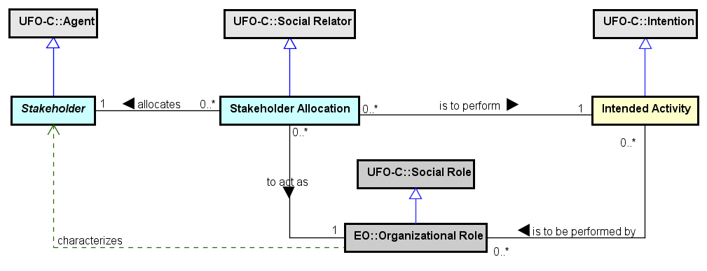
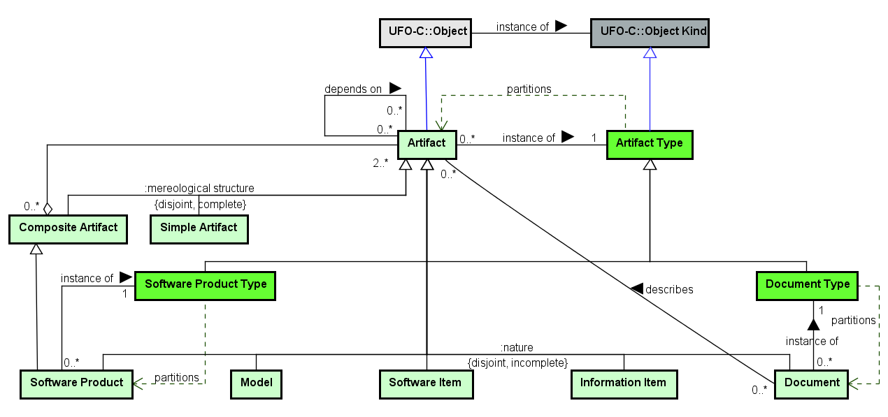
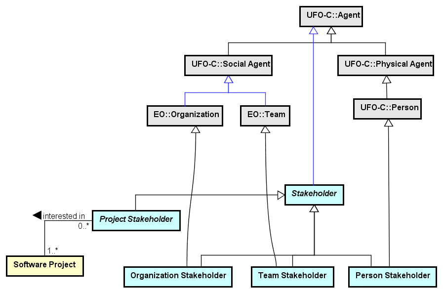
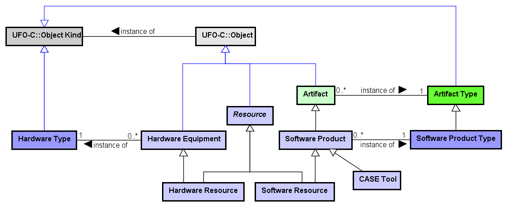
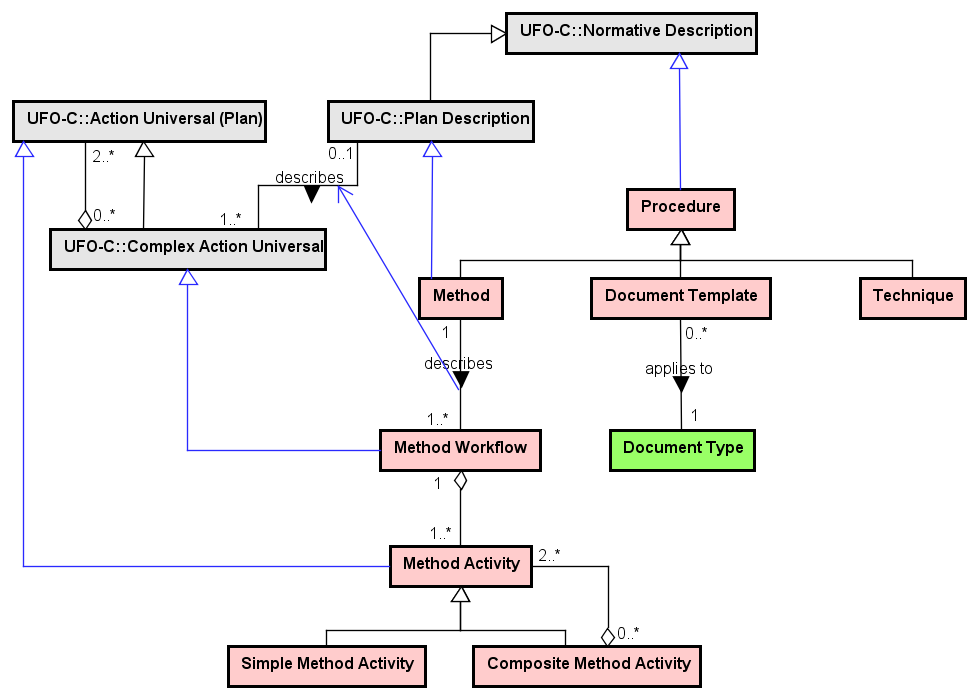

The Software Process Ontology (SPO) aims at establishing a common conceptualization on the Software Process domain, including processes, activities, resources, people, artifacts and procedures. As a core ontology, SPO provides the general concepts for software processes, to be specialized and reused in domain-specific ontologies.
Networked ontologies used by SPO:
| Ontology | Relation | Integration Level |
| UFO - Unified Foundational Ontology | The SPO concepts are derived from UFO (mostly social entities from UFO-C). | High |
| EO - Enterprise Ontology (external) | Some concepts from the Enterprise core Ontology are used by SPO. | Medium |
Figure 1 presents the packages of the SPO Modularization .
Figure 1. SPO Modularization .
Process-related packages address the three SPO process levels, describing processes and activities, how they are composed and related to their assets: (i) Standard Processes, described in the Standard Software Process Definition package; (ii) Intended Processes, represented in the Intended Software Process Definition and Scheduling package; and (iii) Performed Processes, depicted in the Software Process Execution package. All the process levels use process assets that are classified in four types: Agents, Artifacts, Resources, and Procedures.
Figure 2 presents the SPO Color Pattern.

Figure 2. SPO Color Pattern.
In order to facilitate concepts identification, SPO adopts a color pattern for differentiating the main notions in the ontology: concepts in Yellow are related to processes and activities, concepts in Green refer to artifacts, concepts in Blue concern agents, concepts in Purple are related to resources as hardware and software, concepts in Pink refer to procedures. Concepts in Gray are external, from other SEON ontologies. Darker colors represent types. White is used for domain concepts in domain ontologies.
Standard Processes refer to generic processes defined by an organization, establishing the basic requirements for processes to be performed in that organization. The Standard Software Process Definition sub-ontology encompasses the Standard Process Structure and the Standard Activity Definition subontologies.
The Standard Process Structure package aims at describing standard processes in terms of sub-processes and activities.
Figure 3 presents the conceptual model of the Standard Process Structure subontology.

Figure 3. Standard Process Structure conceptual model.
Standard Processes and Activities are institutionalized generic actions establishing basic requirements for intended processes and activities to be performed in an organization or in its projects (for example, a standard Development Process, and its activities, to be performed in the Projects of an Organization). A Standard Process Definition Document, used for describing a set of Standard Processes, is recognized by one or more Organizations.
A Standard Process is established to be performed in the context of projects, configuring a Project Standard Process (such as a standard Development Process), in the context of an organization, configuring an Organizational Standard Process (such as a standard Portfolio Management Process), or can be applicable to both contexts, configuring a Hybrid Standard Process (such as a standard Training Process).
A Standard Process can be general or specific. A General Standard Process is composed of two or more Specific Standard Processes (e.g. a standard Development Process composed of standard Requirements, Design, Constructions and Test Processes). A Specific Standard Process is composed of two or more Standard Activities. A Standard Activity, analogously, can be composite or simple. A Composite Standard Activity is composed of other two or more Standard Activities; a Simple Standard Activity is not decomposable into smaller activities.
Every process and activity performed in an organization or project happen based on an action type. For processes, this action type is the Process Universal, and for activities, this type is the Activity Universal. These generic actions can be formalized in an organization (configuring the discussed Standard Process and Activities), or remain non-formalized.
The Standard Activity Definition package deals with the definition of standard process assets involved in standard activities.
Figure 4 presents the conceptual model of the Standard Activity Definition subontology.

Figure 4. Standard Activity Definition conceptual model.
A Standard Activity, institutionalized as a generic action, establishes a number of relations with the process assets or their types. These relations are important for guiding the definition of processes and activities in the other two process levels (Intended and Performed).
Standard Activities can depend on other Standard Activities, setting a preferred execution order. A Standard Activity can define the types of Artifacts to be created, changed or used (e.g. a Requirements Documentation activity that creates an artifact of the type Requirements Document). A Standard Activity can establish the types of its required resources (e.g. a Conceptual Modeling activity requiring a software product of the type UML Modeling Tool). Standard Activities can also set up their adopted Procedures (e.g. a Coding activity adopting a Programming Technique). Finally, the Standard Activities can define the Organizational Roles that should perform them (e.g. a Design activity that is to be performed by a person playing the Designer role).
Intended Processes relate to processes intended to be performed in the context of a specific project or organizational area. Intended processes can be Scheduled to be executed in a specified period of time. The Intended Software Process Definition and Scheduling package involves the Intended Process Structure, the Intended Activity Definition, the Scheduled Process and the Allocation subontologies.
The Intended Process Structure sub-ontology aims at describing intended processes in terms of sub-processes and activities.
Figure 5 presents the conceptual model of the Intended Process Structure subontology.

Figure 5. Intended Process Structure conceptual model.
An Intended Process refers to the commitments made for defining a process intended to be performed in a specific project or organizational area, considering its peculiarities. It is often defined by adapting a Standard Process, considering a specific context. For Projects, it is a Project Process defining how to conduct the activities within the Project (e.g. the Development Process defined for the Alpha Project). It also can be defined in an organizational context, regardless of specific projects, being an Organizational Intended Process (e.g. the Human Resource Management Process defined for hiring new Employees). Intended Processes can be general or specific. A General Intended Process is composed of at least two Specific Intended Processes (e.g. a Training Process composed of Planning, Preparation, Execution and Evaluation Processes). A Specific Intended Process is composed of at least two Intended Activities.
An Intended Activity refers to the commitments made within a broader Intended Process. Analogously, it uses to be adapted from a Standard Activity, and can be composite or simple. A Composite Standard Activity is composed of other two or more Intended Activities; a Simple Intended Activity is not decomposable into smaller activities. Moreover, Intended Activities can depend on other Intended Activities.
The Intended Activity Definition sub-ontology allows defining the process assets planned to be involved in Intended Activities.
Figure 6 presents the conceptual model of the Intended Activity Definition subontology.

Figure 6. Intended Activity Definition conceptual model.
An Intended Activity needs to define its relations with the process assets. As an adaptation of a Standard Activity considering the peculiarities of its context, it can reuse and adapt the assets established at the standard level. Thus, an Intended Activity can define the Organizational Role responsible for performing it (e.g. a Requirements activity that is to be performed by a person with the role Requirements Engineer); the types of Artifacts to be created, changed or used (e.g. a Project Planning activity that creates an artifact of the type Project Plan); the types of required resources (e.g. a Testing activity requiring a software of the type Testing Tool); and the adopted Procedures (e.g. a Conceptual Modeling activity adopting a OO Method).
The Allocation package deals with allocating Stakeholders to perform Intended Activities by playing a certain Organizational Role.
Figure 7 presents the conceptual model of the Allocation subontology.

Figure 7. Allocation conceptual model.
Stakeholders can be allocated to Scheduled Activities. A Stakeholder Allocation defines the relation representing a Stakeholder allocated to perform a Scheduled Activity acting an Organizational Role (e.g. the allocation of John as a Programmer to perform the scheduled Coding activity).
The Scheduled Process package aims at scheduling intended processes and activities.
Figure 8 presents the conceptual model of the Scheduled Processes and Activities subontology.

Figure 8. Scheduled Processes and Activities conceptual model.
Scheduled Processes and Activities are specializations of Intended Processes and Activities (respectively), defined as appointments scheduled for a specific period of time. For example, the intended Testing Process of the Alpha Project can be scheduled for September 1st to 20th. Since Scheduled Process and Activity specialize Intended Process and Activity, they inherit all the relations (such as compositions, assets and adaptations) and remain information.
Performed Processes concern already executed processes. The Software Process Execution package contains the Performed Process, Stakeholder Participation, Artifact Participation, Resource Participation and Procedure Participation subontologies.
The Performed Process sub-ontology deals with Performed Processes and Activities, and how they are decomposed.
Figure 9 presents the conceptual model of the Performed Process subontology.

Figure 9. Performed Process conceptual model.
Performed Processes and Activities are actions performed in a specific period of time, in the past. They typically are the processes or activities executed in a project or organization by some agent. A Performed Process can occur in a Project, configuring a Project Performed Process (such as a performed Design Process), or in the context of an Organization, configuring an Organizational Performed Process (such as a performed Recruitment Process).
A Performed Process can be general or specific. A General Performed Process is composed of two or more Specific Performed Processes (e.g. a Development Process can be composed of Requirements, Design, Construction and Test Processes). Specific Performed Processes are composed of two or more Performed Activities. A Performed Activity, analogously, can be simple or composite. A Composite Performed Activity is composed of other Performed Activities; a Simple Performed Activity is an atomic action that cannot be decomposed into smaller activities. Performed Activities can also depend on other Performed Activities (e.g. a Review activity that depends on a Documentation activity).
The Artifact Participation sub-ontology deals with the participation of artifacts in performed activities.
Figure 10 presents the conceptual model of the Artifact Participation subontology.

Figure 10. Artifact Participation conceptual model.
Performed Activities handle Artifacts by creating, changing and using them. Thus, there are three types of Artifact Participation in Performed Activities: Artifact Creation, producing a new artifact (e.g. the creation of a Conceptual Model by the Conceptual Modeling activity), Artifact Change, modifying an existing artifact (e.g. the updating of a Conceptual Model by a Maintenance activity), and Artifact Usage, when an existing artifact is used by an activity, but not changed (e.g. a Conceptual Model used by the Detailed Design activity). These participations can be expressed by a relator (one of the Artifact Participation specializations), or by the corresponding material relation (creates, changes, uses).
The Stakeholder Participation sub-ontology deals with the participation of stakeholders in performed activities.
Figure 11 presents the conceptual model of the Stakeholder Participation subontology.

Figure 11. Stakeholder Participation conceptual model.
A Stakeholder participates in Performed Activities, executing or contributing for them. A Stakeholder Participation represents the participation of a Stakeholder in a Performed Activity playing an Organizational Role (as the participation of a John acting as Designer in a User Interface Design activity). When a Stakeholder participates as the responsible for a Performed Activity, this is a Stakeholder Main Participation (as the participation, including the responsibility taken, of a Project Manager in a Project Planning activity). These two types of participations can also be expressed by the respective participates in and is in charge of material relations.
The Resource Participation sub-ontology deals with the participation of resources in performed activities.
Figure 12 presents the conceptual model of the Resource Participation subontology.

Figure 12. Resource Participation conceptual model.
Performed Activities can use Resources during their execution. These resources can be a Software Resource (such as a Text Editor) or a Hardware Resource (such as a Laser Printer). These two types of participations can also be expressed by the respective participates in and is in charge of material relations. These participations of Resources in Performed Activities can be expressed by the relators Software Resource Participation or Hardware Resource Participation, or by the uses material relation.
The Procedure Participation sub-ontology deals with the adoption of procedures in performed activities.
Figure 13 presents the conceptual model of the Procedure Participation subontology.

Figure 13. Procedure Participation conceptual model.
Performed Activities adopt Procedures for helping their execution. For example, when a Conceptual Modeling activity adopts an OO Method, or a Design Documentation activity adopts a Design Document Template. These participations of Procedures in Performed Activities can be expressed by the relator Procedure Participation, or by the adopts material relation.
Process Assets are the elements (planned to be) used or handled by the activities during a software process. SPO classifies process assets in four types:
(i) Stakeholders refer to people, teams or organizations acting in or performing process activities;
(ii) Artifacts represent different types of objects produced and used in process activities;
(iii) Resources involve hardware equipments and software products used by activities; and
(iv) Procedures relate to methods, techniques and document templates adopted by activities.
These process assets are dealt by the processes activities through allocation and participation relations.
The Process Assets sub-ontology aims at describing these types of process assets, except Artifacts that are already described in the Software Artifact Ontology (SwAO).
The Artifact Ontology aims at establishing a common conceptualization regarding Software Artifacts, including software products and related components.
Artifacts are objects consumed or produced during the software process. They can present different nature and composition. Possible types of Artifacts are (not limited to): Software Product (e.g. Eclipse IDE), Software Item (e.g. a database schema), Information Item (e.g. a bug reported), Model (e.g. a UML class model) and Document (e.g. a requirements specification). Documents can describe other Artifacts, as it is the case of a Design Specification describing a Software Architecture. The concepts Artifact Type, Document Type and Software Product Type define the possible specializations of Artifact, Software Product and Document (respectively).
An Artifact can be composite or simple. A Composite Artifact is composed of two or more other Artifacts (e.g. a Project Plan composed of artifacts as a WBS diagram and a Risk Plan). A Simple Artifact is not decomposable. Artifacts can also depend on other Artifacts to be produced or updated, such as a Test Case depending on the Code it was designed to test.
Figure 14 presents the conceptual model of the Artifacts subontology.

Figure 14. Artifacts conceptual model.
In the context of the software domain, Artifacts are objects intentionally made to serve a given purpose in the context of a Software Project or Organization. They can be composed of other artifacts (Composite Artifact) or not (Simple Artifact). An artifact is an instance of an Artifact Type (a second order type). Artifact Type partitions the generalization set of Artifacts according to their nature, giving rise to a taxonomy of artifacts. More specific taxonomies can be established for specific types of artifacts, such as documents (established by instances of Document Type) and Software Product (Software Product Type), among others.
The Stakeholders sub-ontology deals with the different types of stakeholders in a software process.
Figure 15 presents the conceptual model of the Stakeholders subontology.

Figure 15. Stakeholders conceptual model.
SPO considers three main types of Agents: Person, representing the people as the employees, external collaborators and any other person in the context of the processes; Team, addressing the groups established with a purpose in an organization or project; and Organization, expressing organizations such as clients, partners and suppliers.
Stakeholder represents the agents interested or affected by the process activities or results. Considering the agent nature, Stakeholders can be classified in three types: Person Stakeholder (such as a hired Programmer, an external Instructor, or a User), Team Stakeholder (such as the Software Engineering Process Group - SEPG, a Quality Assurance or a Testing Team), and Organization Stakeholder (such as a Project Client or a Quality Assessment Organization). A specific type of Stakeholder is Project Stakeholder, representing any stakeholder interested in a particular Project (such as the Project Team, the Users, and the Project's Client Organization).
The Resources sub-ontology deals with the different types of resources used in a software process.
Figure 16 presents the conceptual model of the Resources subontology.

Figure 16. Resources conceptual model.
Hardware Equipments are physical objects used for running software programs or to support some related action. They are classified by Hardware Type and can be computers, printers, routers, among others. Software Products are artifacts representing (a set of) computer programs ready to be used for supporting software process activities. They are classified by Software Product Type and can be development tools, text editors, libraries, among others. Both Hardware Equipments and Software Products are considered Resources (Hardware Resource and Software Resource) when used by some process activity.
The Procedures sub-ontology deals with the different types of procedures adopted in a software process.
Figure 17 presents the conceptual model of the Procedures subontology.

Figure 17. Procedures conceptual model.
Procedures are normative descriptions prescribing a defined way for performing the activities that adopt it. They can be of three types: Method, Technique and Document Template. A Method is a systematic procedure defining a workflow of activities (a set of steps) and heuristics to perform one or more activities. As a Method can be applied for different activities, it can have one or more Method Workflows (e.g. an OO Method can provide distinct workflows for the analysis and design activities), denoting a combination of Method Activities for the execution of process activities. Technique is a procedure that provides heuristics to perform an activity (but in a less rigid and detailed way than a Method, since it does not prescribe a set of activities). Examples of Techniques are pair programming, white-box testing, and brainstorming. Finally, a Document Template is a procedure establishing a uniform way for preparing a Document, providing a predefined format and a defined structure for filling it with the required information (e.g. a Project Plan Template, a Test Report Template).
The following table shows the definitions for SPO concepts.
| Concept | Definition |
| Activity Universal
|
Action Universal representing any generic activity in an Organization (formalized or not), which is the powertype of every Performed Activity.
Ex.: a formalized standard Requirements Elicitation activity, a non-formalized generic (alternative) Requirements Elicitation activity. |
| Artifact
|
Object intentionally made to serve a given purpose in the context of a software Project or Organization.
Ex.: a document, a model, a library, an e-mail, a bug. |
| Artifact Change
|
Artifact Participation in which an existing Artifact is modified.
Ex.: the change of the source Code as part of a Coding activity fixing a bug in it. |
| Artifact Creation
|
Artifact Participation in which a new Artifact is created.
Ex.: the creation of the source Code as part of a Coding activity. |
| Artifact Participation
|
The participation of an Artifact in a Performed Activity.
Ex.: when an artifact is created, changed or used by an activity. |
| Artifact Type
|
Object Kind which is the powertype of Artifact, classifying its specializations.
Ex.: Document, Model, Software Product, Information Item, Software Item. |
| Artifact Usage
|
Artifact Participation in which an existing Artifact is used, but not modified.
Ex.: the usage of a Design Specification in a Coding activity. |
| CASE Tool
|
|
| Composite Artifact
|
Artifact composed of other Artifacts.
|
| Composite Intended Activity
|
Intended Activity composed of other Intended Activities.
|
| Composite Method Activity
|
Method Activity composed of other Method Activities.
|
| Composite Standard Activity
|
Standard Activity composed of other Standard Activities.
|
| Document
|
Any written or pictorial, uniquely identified, information related to the software development, usually presented in a predefined format.
Ex.: a Requirements Document, a specification, a report. |
| Document Template
|
Procedure aiming to establish a uniform way for preparing a Document, providing a predefined format and a defined structure for filling with the expected information.
Ex.: Project Plan Template, Test Report Template. |
| Document Type
|
Artifact Type which is the powertype of Document, classifying its specializations.
Ex.: Requirements Document, Design Specification, Project Plan. |
| General Intended Process
|
Intended Process that is composed of Specific Intended Processes, allowing an Organization or Project to define sub-processes that are part of a complete Intended Process.
Ex.: the overall Development Process defined for the Alpha Project. |
| General Project Process
|
|
| General Standard Process
|
Standard Process that is composed of Specific Standard Processes, allowing an Organization to establish sub-processes that are part of a complete Standard Process.
Ex.: the overall Development Process established for the Organization Projects. |
| Hardware Equipment
|
Physical Object used for running software programs or to support some related action.
Ex.: Computer Dell I7, Laser Printer HP, Smartphone Galaxy 7, Router Linksys Wi-fi. |
| Hardware Resource
|
Hardware Equipment when used as Resource of some process activity.
Ex.: a specific Computer Dell I7 being used by the Project Planning activity. |
| Hardware Resource Participation
|
The participation of a Hardware Equipment as a Resource in a Performed Activity.
Ex.: the use of a specific Computer in a Coding activity. |
| Hardware Type
|
Object Kind which is the powertype of Hardware Equipment, classifying its specializations.
Ex.: Computer, Printer, Router, Keyboard. |
| Hybrid Standard Process
|
Standard Process established to be performed in the context of a Project or Organization.
Ex.: a Training Process, a Quality Auditing Process. |
| Information Item
|
Relevant information for human use, produced or used by Performed Activity.
Ex.: a documented requirement, a bug reported, an agreement e-mail, a component description. |
| Intended Activity
|
Intention (Internal Commitment) representing the activity defined to be performed as part of an Intended Process, by a defined role, potentially consuming and producing artifacts, using resources and adopting procedures.
Ex.: Unit Testing, Measure Collection, Strategic Goals Definition. |
| Intended Process
|
Intention (Internal Commitment) representing the process defined to be performed in a specific project or organizational area, considering its particularities.
Ex.: Testing, Measurement, Strategic Planning intended processes. |
| Method
|
Systematic Procedure defining a workflow of activities (a set of steps) and heuristics to perform one or more activities.
Ex.: an OO Method, an Interview Method. |
| Method Activity
|
Action type representing one of the steps of a Method Workflow.
Ex.: the Classes Identification activity of an OO Method. |
| Method Workflow
|
Complex Action type denoting a set of steps (Method Activities) to be used when a Method is adopted.
Ex.: the steps for using a OO Method for the software design phase. |
| Model
|
A representation (abstraction) of a process or system from a particular perspective.
Ex.: a use case model, a class model, a component model. |
| Organization Stakeholder
|
Organization interested or affected by the process activities or results.
Ex.: a Client Organization. |
| Organizational Intended Process
|
Intended Process defined to be performed in the context of an Organization, regardless of specific Projects.
Ex.: an intended Portfolio Management Process, a intended Human Resource Hiring Process. |
| Organizational Standard Process
|
Standard Process established to be performed in the context of an Organization, regardless of specific Projects.
Ex.: a standard Portfolio Management Process, a standard Human Resource Hiring Process. |
| Performed Activity
|
Action performed, in a specific Time Interval, by a Stakeholder, potentially producing and consuming Artifacts, as part of a Specific Performed Process.
Ex.: Requirement Elicitation, Component Design, Coding, Integration Test, Training Planning. |
| Performed Composite Activity
|
Performed Activity composed of other Performed Activities.
|
| Performed General Process
|
The overall Performed Process executed in a specific Project or Organization, which is necessarily composed of Specific Performed Processes.
Ex.: the overall process performed in a software project. |
| Performed Organizational Process
|
Performed Process executed in the context of an Organization, regardless of specific Projects.
Ex.: a performed Portfolio Management Process, a performed Human Resource Hiring Process. |
| Performed Process
|
Complex Action, composed of other processes or activities, performed in a specific Time Interval, for reaching a goal in a Project or Organization.
Ex.: Development, Configuration Management, Training performed processes. |
| Performed Project Activity
|
|
| Performed Project Process
|
Performed Process executed within a Project.
Ex.: a performed Requirement Process, a performed Construction Process. |
| Performed Simple Activity
|
Performed Activity that is not further decomposed into other Performed Activities.
|
| Performed Specific Process
|
Performed Process that is part of the General Performed Process of a Project or Organization, necessarily composed of at least two Performed Activities.
Ex.: the Project Management Process performed in a specific project; the Portfolio Management Process performed in an organization. |
| Person Stakeholder
|
Person interested or affected by the process activities or their results.
Ex.: an Analyst, a Programmer, a User. |
| Procedure
|
Normative Description prescribing a defined way for performing process activities.
Ex.: an OO Method, the Pair Programming technique, a Project Plan Template. |
| Procedure Participation
|
The participation of a Procedure in a Performed Activity.
Ex.: the adoption of an Interview Technique in a Requirements Elicitation activity. |
| Process Universal
|
Complex Action Universal representing any generic process in an Organization (formalized or not), which is the powertype of every Performed Process.
Ex.: a formalized Standard Process (e.g. Development Process), a non-formalized generic process (e.g. Reuse Process). |
| Project Activity
|
Intended Activity defined to be performed within a Project, and thus that is part of a Project Process.
Ex.: a project Requirement Process, a project Construction Process. |
| Project Process
|
Intended Process defined to be performed within a Project.
Ex.: a project Requirement Process, a project Construction Process. |
| Project Stakeholder
|
Stakeholder interested in a particular Project.
Ex.: the Project Team, the Project Client. |
| Project Standard Process
|
A Standard Process established to be performed within a Project.
Ex.: a standard Requirement Process, a standard Construction Process. |
| Resource
|
Software Product or Hardware Equipment when used by a process activity.
Ex.: a Smartphone being used by a Testing activity. |
| Scheduled Activity
|
An Intended Activity defining the time interval it is planned to be performed.
Ex.: The Requirements Verification and Validation activity scheduled for August 5th to 9th. |
| Scheduled Process
|
An Intended Process defining the Time Interval it is planned to be performed.
Ex.: The Requirements Development Process defined for the Alpha Project and scheduled for July 1st to August 15th. |
| Simple Artifact
|
Artifact that is not decomposed into other Artifacts.
|
| Simple Intended Activity
|
Intended Activity that is not further decomposed into other Intended Activities.
|
| Simple Method Activity
|
Method Activity that is not further decomposed into other Method Activities.
|
| Simple Standard Activity
|
Standard Activity that is not further decomposed into other Standard Activities.
|
| Software Item
|
Piece of software, produced during the software process, not considered a complete Software Product, but an intermediary result.
Ex.: a component, database schema, a script. |
| Software Organization
|
|
| Software Product
|
One or more computer programs together with any accompanying auxiliary items, such as documentation, delivered under a single name, ready for use.
Ex.: Astah modeling tool, Microsoft Word, Eclipse IDE. |
| Software Product Type
|
Artifact Type which is the powertype of Software Product, classifying its specializations.
Ex.: Modeling Tool, Text Editor, IDE, Compiler. |
| Software Project
|
A Project related to software development or maintenance.
|
| Software Resource
|
Software Product when used as Resource of some process activity.
Ex.: the Eclipse IDE being used by the Coding activity. |
| Software Resource Participation
|
The participation of a Software Product as Resource in a Performed Activity.
Ex.: the use of the MS Project in a Project Scheduling activity. |
| Specific Intended Process
|
Intended Process that is part of the General Intended Process of a Project or Organization, necessarily composed of at least two Intended Activities.
Ex.: the Construction Process defined for a specific project; the Training Process defined for an organizational OO training. |
| Specific Project Process
|
|
| Specific Standard Process
|
Standard Process that can be part of a General Standard Process of a Project or Organization, necessarily composed of at least two Standard Activities.
Ex.: the standard Requirements Development Process established as part of a broader standard Development Process. |
| Stakeholder
|
Agent (Person, Team or Organization) interested or affected by the process activities or results.
Ex.: an Analyst, a Programmer, a User, a Testing Team, a Client Organization. |
| Stakeholder Allocation
|
Social Relator representing a Stakeholder allocated to perform a Scheduled Activity acting an Organizational Role.
Ex.: the allocation of Mary as a Project Manager to perform the scheduled Project Planning activity. |
| Stakeholder Main Participation
|
The participation of a Stakeholder as the main responsible for a Performed Activity, playing an Organizational Role.
Ex.: Mary acting as the Project Manager in a Project Control activity. |
| Stakeholder Participation
|
The participation of a Stakeholder in a Performed Activity, playing an Organizational Role.
Ex.: Mary acting as Programmer in a Coding Activity; the Quality Assurance Team acting as an Auditor in an Auditing activity. |
| Standard Activity
|
Action Universal representing a generic activity institutionalized as part of a Standard Process in an Organization, establishing general information such as dependence on other activities, types of artifacts created, changed and used, required software and hardware resources, adopted procedures, and roles to perform it.
Ex.: Conceptual Modeling, Training Evaluation, Project Risks Planning. |
| Standard Process
|
Complex Action Universal representing a generic process institutionalized in an Organization, establishing basic requirements for Intended Processes to be performed in that Organization or in its Projects.
Ex.: Development, Training, Acquisition standard processes. |
| Standard Process Definition Document
|
Plan Description, recognized by an Organization, which describes a set of Standard Processes.
Ex.: The whole available description of an organization processes. |
| Team Stakeholder
|
Team interested or affected by the process activities or results.
Ex.: a Testing Team. |
| Technique
|
Procedure that provides heuristics to perform an activity (but in a less rigid and detailed way than a method, since it does not prescribe a set of activities).
Ex.: White-box testing, Pair programming. |
<<2ndOT>>Activity Universal |
Performed Activity (0..*) instance of (1..1) Activity Universal
<<category>>Artifact |
Artifact (0..*) instance of (1..1) Artifact Type
Artifact (0..*) depends on (0..*) Artifact <<material>>
Composite Artifact (0..*) <>-- (2..*) Artifact <<componentOf>>
Performed Activity (0..1) creates (0..*) Artifact <<material>>
Performed Activity (0..*) changes (0..*) Artifact <<material>>
Performed Activity (0..*) uses (0..*) Artifact <<material>>
Stakeholder (0..*) responsible for (0..*) Artifact <<material>>
Artifact Participation (0..*) participation of (1..1) Artifact
Document (0..*) describes (0..*) Artifact
<<event>>Artifact Change |
<<event>>Artifact Creation |
<<event>>Artifact Participation |
Artifact Participation (0..*) participation of (1..1) Artifact
Performed Activity (1..1) <>-- (0..*) Artifact Participation
<<2ndOT>>Artifact Type |
Artifact (0..*) instance of (1..1) Artifact Type
Standard Activity (0..*) uses (0..*) Artifact Type
Standard Activity (0..*) changes (0..*) Artifact Type
Standard Activity (0..*) creates (0..*) Artifact Type
Intended Activity (0..*) creates (0..*) Artifact Type
Intended Activity (0..*) changes (0..*) Artifact Type
Intended Activity (0..*) uses (0..*) Artifact Type
<<event>>Artifact Usage |
<<subkind>>CASE Tool |
<<category>>Composite Artifact |
Composite Artifact (0..*) <>-- (2..*) Artifact <<componentOf>>
<<mode>>Composite Intended Activity |
Composite Intended Activity (0..*) <>-- (2..*) Intended Activity
Performed Composite Activity caused by Composite Intended Activity
<<2ndOT>>Composite Method Activity |
Composite Method Activity (0..*) <>-- (2..*) Method Activity
<<2ndOT>>Composite Standard Activity |
Composite Standard Activity (0..*) <>-- (2..*) Standard Activity
<<kind>>Document |
Document (0..*) describes (0..*) Artifact
Document (0..*) instance of (1..1) Document Type
<<kind>>Document Template |
Document Template (0..*) applies to (1..1) Document Type
<<2ndOT>>Document Type |
Document Template (0..*) applies to (1..1) Document Type
Document (0..*) instance of (1..1) Document Type
<<mode>>General Intended Process |
General Intended Process (0..*) adapts (0..1) General Standard Process
General Intended Process (1..1) <>-- (2..*) Specific Intended Process
| General Project Process |
General Project Process (1..1) <>-- (2..*) Specific Project Process
<<2ndOT>>General Standard Process |
General Standard Process (0..*) <>-- (2..*) Specific Standard Process
General Intended Process (0..*) adapts (0..1) General Standard Process
<<kind>>Hardware Equipment |
Hardware Equipment (0..*) instance of (1..1) Hardware Type
<<role>>Hardware Resource |
Hardware Resource Participation (1..*) participation of (1..1) Hardware Resource
<<event>>Hardware Resource Participation |
Hardware Resource Participation (1..*) participation of (1..1) Hardware Resource
Performed Activity (1..1) <>-- (0..*) Hardware Resource Participation
<<2ndOT>>Hardware Type |
Hardware Equipment (0..*) instance of (1..1) Hardware Type
Standard Activity (0..*) requires (0..*) Hardware Type
Intended Activity (0..*) requires (0..*) Hardware Type
<<2ndOT>>Hybrid Standard Process |
<<kind>>Information Item |
<<mode>>Intended Activity |
Intended Activity (0..*) adapts (0..1) Standard Activity
Intended Activity (0..*) depends on (0..*) Intended Activity
Intended Activity (0..*) is to be performed by (0..*) Organizational Role
Intended Activity (0..*) requires (0..*) Software Product Type
Intended Activity (0..*) requires (0..*) Hardware Type
Intended Activity (0..*) is to be performed adopting (0..*) Procedure
Intended Activity (0..*) creates (0..*) Artifact Type
Intended Activity (0..*) changes (0..*) Artifact Type
Intended Activity (0..*) uses (0..*) Artifact Type
Stakeholder Allocation (0..*) is to perform (1..1) Intended Activity <<mediation>>
Composite Intended Activity (0..*) <>-- (2..*) Intended Activity
Specific Intended Process (1..1) <>-- (2..*) Intended Activity
Performed Activity (0..*) caused by (0..1) Intended Activity
<<mode>>Intended Process |
Intended Process (0..*) based on (0..*) Standard Process
Intended Process (0..*) adapts (0..1) Standard Process
Performed Process (0..1) caused by (0..1) Intended Process
<<kind>>Method |
Method (1..1) describes (1..*) Method Workflow
<<2ndOT>>Method Activity |
Composite Method Activity (0..*) <>-- (2..*) Method Activity
Method Workflow (1..1) <>-- (1..*) Method Activity
<<2ndOT>>Method Workflow |
Method Workflow (1..1) <>-- (1..*) Method Activity
Method (1..1) describes (1..*) Method Workflow
<<kind>>Model |
<<role>>Organization Stakeholder |
<<mode>>Organizational Intended Process |
Organizational Intended Process (0..*) defined for (1..1) Organization
<<2ndOT>>Organizational Standard Process |
<<event>>Performed Activity |
Performed Activity (0..*) caused by (0..1) Intended Activity
Performed Activity (0..*) depends on (0..*) Performed Activity
Performed Activity (0..*) instance of (1..1) Activity Universal
Performed Activity (0..*) participates in (1..*) Stakeholder <<material>>
Performed Activity (0..1) creates (0..*) Artifact <<material>>
Performed Activity (0..*) changes (0..*) Artifact <<material>>
Performed Activity (0..*) uses (0..*) Artifact <<material>>
Performed Activity (1..1) <>-- (0..*) Software Resource Participation
Performed Activity (1..1) <>-- (0..*) Hardware Resource Participation
Performed Activity (1..*) uses (0..*) Resource <<material>>
Performed Activity (1..1) <>-- (1..*) Stakeholder Participation
Performed Activity (0..*) adopts (0..*) Procedure <<material>>
Performed Activity (1..1) <>-- (0..*) Procedure Participation
Performed Activity (1..1) <>-- (0..*) Artifact Participation
Performed Specific Process (1..*) <>-- (2..*) Performed Activity
Software Measurement Execution (0..*) occurs in (1..1) Performed Activity
Software Measurement Analysis (0..*) (0..1) Performed Activity
Stakeholder (1..*) is in charge of (0..*) Performed Activity <<material>>
Performed Composite Activity (0..*) <>-- (2..*) Performed Activity
<<event>>Performed Composite Activity |
Performed Composite Activity (0..*) <>-- (2..*) Performed Activity
Performed Composite Activity caused by Composite Intended Activity
<<event>>Performed General Process |
Performed General Process (1..1) <>-- (2..*) Performed Specific Process
<<event>>Performed Organizational Process |
Performed Organizational Process (0..*) performed in (1..1) Organization
<<event>>Performed Process |
Performed Process (0..1) caused by (0..1) Intended Process
Performed Process (0..*) instance of (1..1) Process Universal
| Performed Project Activity |
Performed Project Activity (0..*) caused by (0..1) Project Activity
Performed Project Activity (0..*) /performed in (1..1) Software Project
<<event>>Performed Project Process |
Performed Project Process (0..*) performed in (1..1) Software Project
Performed Project Process (0..1) caused by (0..1) Project Process
<<event>>Performed Simple Activity |
Performed Simple Activity caused by Simple Intended Activity
<<event>>Performed Specific Process |
Performed Specific Process (1..*) <>-- (2..*) Performed Activity
Performed General Process (1..1) <>-- (2..*) Performed Specific Process
<<role>>Person Stakeholder |
<<category>>Procedure |
Performed Activity (0..*) adopts (0..*) Procedure <<material>>
Standard Activity (0..*) is to be performed adoting (0..*) Procedure
Intended Activity (0..*) is to be performed adopting (0..*) Procedure
Procedure Participation (0..*) participation of (1..1) Procedure
<<event>>Procedure Participation |
Procedure Participation (0..*) participation of (1..1) Procedure
Performed Activity (1..1) <>-- (0..*) Procedure Participation
<<2ndOT>>Process Universal |
Performed Process (0..*) instance of (1..1) Process Universal
| Project Activity |
Project Activity (0..*) /defined for (1..1) Software Project
Performed Project Activity (0..*) caused by (0..1) Project Activity
Specific Project Process (1..1) <>-- (2..*) Project Activity
<<mode>>Project Process |
Project Process (0..*) defined for (1..1) Software Project
Performed Project Process (0..1) caused by (0..1) Project Process
<<rolemixin>>Project Stakeholder |
Project Stakeholder (0..*) interested in (1..*) Software Project <<material>>
<<2ndOT>>Project Standard Process |
<<rolemixin>>Resource |
Performed Activity (1..*) uses (0..*) Resource <<material>>
<<mode>>Scheduled Activity |
Scheduled Activity (0..*) refers to (1..1) Time Interval
<<mode>>Scheduled Process |
Scheduled Process (0..*) refers to (1..1) Time Interval
<<category>>Simple Artifact |
<<mode>>Simple Intended Activity |
Performed Simple Activity caused by Simple Intended Activity
<<2ndOT>>Simple Method Activity |
<<2ndOT>>Simple Standard Activity |
<<kind>>Software Item |
| Software Organization |
Software Organization (1..*) establishes (0..*) Operational Definition of Measure
<<kind>>Software Product |
Software Product (0..*) instance of (1..1) Software Product Type
Software Product (0..1) constituted of (1..*) Software System
<<2ndOT>>Software Product Type |
Standard Activity (0..*) requires (0..*) Software Product Type
Software Product (0..*) instance of (1..1) Software Product Type
Intended Activity (0..*) requires (0..*) Software Product Type
<<subkind>>Software Project |
Software Project (1..1) has (0..*) Deliverable
Testing Environment (0..1) defined for (1..1) Software Project
Performed Project Process (0..*) performed in (1..1) Software Project
Project Process (0..*) defined for (1..1) Software Project
Performed Project Activity (0..*) /performed in (1..1) Software Project
Software Project Measurement Plan (0..*) defined for (1..1) Software Project
Project Activity (0..*) /defined for (1..1) Software Project
Project Stakeholder (0..*) interested in (1..*) Software Project <<material>>
<<role>>Software Resource |
Software Resource Participation (1..*) participation of (1..1) Software Resource
<<event>>Software Resource Participation |
Software Resource Participation (1..*) participation of (1..1) Software Resource
Performed Activity (1..1) <>-- (0..*) Software Resource Participation
<<mode>>Specific Intended Process |
Specific Intended Process (0..*) adapts (0..1) Specific Standard Process
Specific Intended Process (1..1) <>-- (2..*) Intended Activity
General Intended Process (1..1) <>-- (2..*) Specific Intended Process
| Specific Project Process |
Specific Project Process (1..1) <>-- (2..*) Project Activity
General Project Process (1..1) <>-- (2..*) Specific Project Process
<<2ndOT>>Specific Standard Process |
Specific Standard Process (1..*) <>-- (2..*) Standard Activity
Specific Intended Process (0..*) adapts (0..1) Specific Standard Process
General Standard Process (0..*) <>-- (2..*) Specific Standard Process
<<rolemixin>>Stakeholder |
Stakeholder (0..*) responsible for (0..*) Artifact <<material>>
Stakeholder (1..*) is in charge of (0..*) Performed Activity <<material>>
Stakeholder Allocation (0..*) allocates (1..1) Stakeholder <<mediation>>
Performed Activity (0..*) participates in (1..*) Stakeholder <<material>>
Stakeholder Participation (0..*) participation of (1..1) Stakeholder
Stakeholder Main Participation (0..*) charge of (1..1) Stakeholder
<<relator>>Stakeholder Allocation |
Stakeholder Allocation (1..*) framed by (1..1) Time Interval
Stakeholder Allocation (0..*) is to perform (1..1) Intended Activity <<mediation>>
Stakeholder Allocation (0..*) to act as (1..1) Organizational Role <<material>>
Stakeholder Allocation (0..*) allocates (1..1) Stakeholder <<mediation>>
Stakeholder Participation (0..*) refers to (0..1) Stakeholder Allocation
<<event>>Stakeholder Main Participation |
Stakeholder Main Participation (0..*) charge of (1..1) Stakeholder
<<event>>Stakeholder Participation |
Stakeholder Participation (0..*) participation of (1..1) Stakeholder
Stakeholder Participation (0..*) refers to (0..1) Stakeholder Allocation
Stakeholder Participation (0..*) acts as (1..1) Organizational Role
Performed Activity (1..1) <>-- (1..*) Stakeholder Participation
<<2ndOT>>Standard Activity |
Standard Activity (0..*) depends on (0..*) Standard Activity
Standard Activity (0..*) is to be performed by (0..*) Organizational Role
Standard Activity (0..*) requires (0..*) Hardware Type
Standard Activity (0..*) requires (0..*) Software Product Type
Standard Activity (0..*) is to be performed adoting (0..*) Procedure
Standard Activity (0..*) uses (0..*) Artifact Type
Standard Activity (0..*) changes (0..*) Artifact Type
Standard Activity (0..*) creates (0..*) Artifact Type
Operational Definition of Measure (0..*) indicates (0..*) Standard Activity
Intended Activity (0..*) adapts (0..1) Standard Activity
Composite Standard Activity (0..*) <>-- (2..*) Standard Activity
Specific Standard Process (1..*) <>-- (2..*) Standard Activity
<<2ndOT>>Standard Process |
Standard Process Definition Document (1..1) describes (1..*) Standard Process
Intended Process (0..*) based on (0..*) Standard Process
Intended Process (0..*) adapts (0..1) Standard Process
<<kind>>Standard Process Definition Document |
Standard Process Definition Document (1..1) describes (1..*) Standard Process
Standard Process Definition Document (0..*) recognized by (1..*) Organization
<<role>>Team Stakeholder |
<<kind>>Technique |